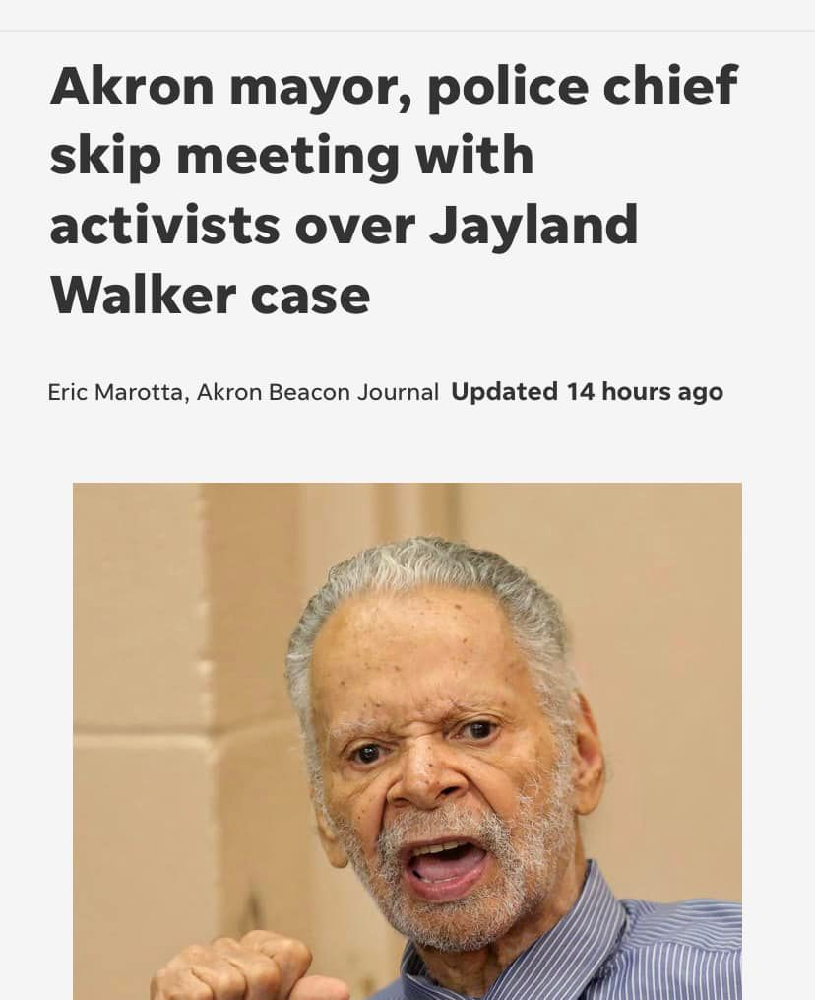

Mobile uploads
Unlike our current mayor, I’m not afraid of the media or activists.
When shit hits the fan I will show up. (By now, I hope you know that’s the truth. I’m not afraid of facing the truth.)
And also unlike our current mayor, I WILL GET YOU A CIVILIAN OVERSIGHT BOARD FOR OUR POLICE.
I wish SO bad I was in their right now. You deserve so much better than what you are getting.